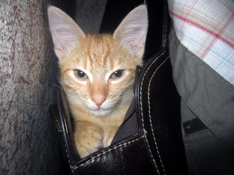
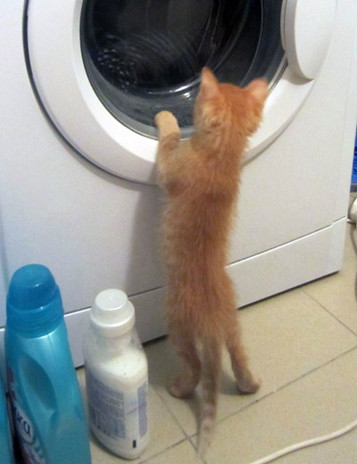
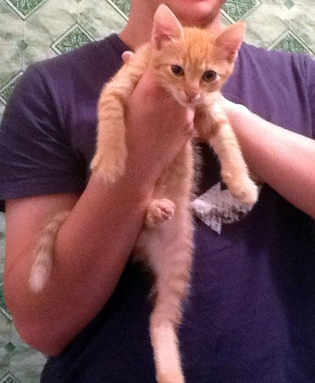
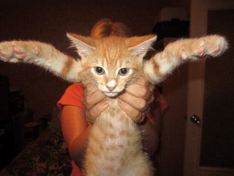
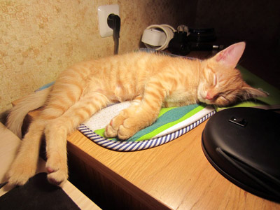

В то утро Кексик проснулся в своей сумке-гнезде очень рано. День обещал быть насыщенным.
В связи с чем он решил позаниматься на своей вешалке-турнике.

Занятия утомили кота и он решил слегка отдохнуть, посмотреть телевизор.
Восстановив силы, кот занялся привычными делами по наведению беспорядка, но был пойман.
Ближе к вечеру подвернулась отличная возможность отведать сметаны, но и в этот раз его поймали на месте преступления.
Решив, что на сегодня свершений достаточно, Кексик с чистой совестью отправился спать.
